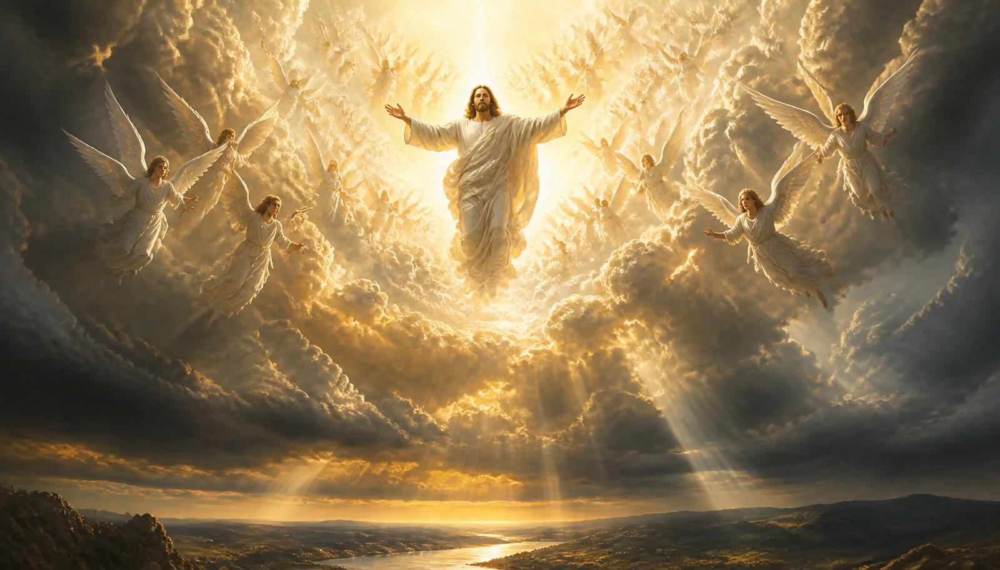
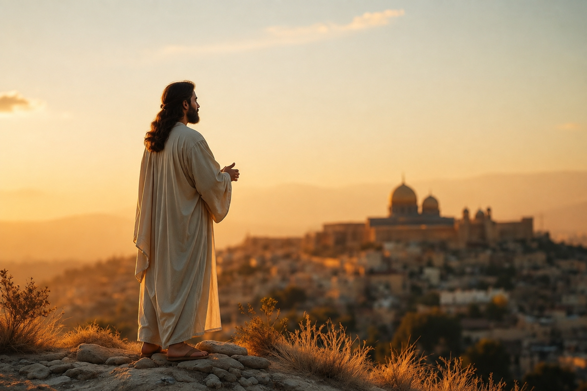

A maior promessa já feita à humanidade: Ele voltará — pessoal, visível, audível e gloriosamente — para levar Seus filhos para casa.
A maior promessa
Na última noite antes da cruz, com os discípulos com o coração apertado, Jesus fez a promessa que se tornou o centro da esperança cristã.
Repare na estrutura da promessa: Ele vai (a ascensão), Ele prepara (o ministério de Jesus no santuário celestial) e Ele volta pessoalmente. Não envia um anjo, não manda um representante — “virei outra vez”. É o próprio Jesus quem vem buscar Seu povo.
E a Bíblia se encerra exatamente com o eco dessa promessa: “Certamente cedo venho. Amém! Ora vem, Senhor Jesus!” (Apocalipse 22:20). A última fala registrada de Cristo nas Escrituras é um compromisso de retorno.

Você sabia?
A volta de Jesus é mencionada mais de 1.500 vezes no conjunto das Escrituras.
Aproximadamente um em cada vinte e cinco versículos do Novo Testamento fala do retorno de Cristo.
A profecia mais antiga registrada sobre a vinda do Senhor com Suas miríades de santos é de Enoque (Judas 14-15).
“Adventista” vem de adventus, “vinda”. O nome da igreja é, literalmente, uma declaração de esperança.
Como será
Quarenta dias depois da ressurreição, os discípulos viram Jesus subir. Dois anjos então definiram, em uma única frase, toda a doutrina adventista sobre o retorno.
É o mesmo Jesus, em corpo real e glorificado — não um símbolo, não uma “vinda espiritual” no coração, não a morte de uma pessoa.
“Eis que vem com as nuvens, e todo olho O verá” (Ap 1:7). Nenhum ser humano sobre a Terra deixará de ver aquele momento.
Com brado de comando, voz de arcanjo e a trombeta de Deus (1 Ts 4:16). Não há nada secreto ou silencioso nesse evento.
“O Filho do Homem há de vir na glória de Seu Pai, com os Seus anjos” (Mt 16:27) — toda a hoste celestial O acompanha.
Ele não põe os pés na Terra nesta ocasião: os salvos são arrebatados “nas nuvens, a encontrar o Senhor nos ares” (1 Ts 4:17).
“Vem como ladrão de noite” (1 Ts 5:2-3) fala da surpresa para quem não está preparado, jamais de um sigilo. O ladrão surpreende; ele não é invisível.
Se o retorno fosse secreto, o próprio Jesus não teria precisado alertar: “Se alguém vos disser: Eis que Ele está no deserto, não saiais… porque, assim como o relâmpago sai do oriente e se mostra até ao ocidente, assim será também a vinda do Filho do Homem.” (Mateus 24:26-27)
Mito × Bíblia
Naquele dia
A mesma glória que enche uns de alegria enche outros de terror. Não é Jesus que muda — é o coração de quem O recebe.
O dia e a hora
Deus manteve a data em segredo de propósito. Se soubéssemos o dia, seríamos tentados a viver de qualquer jeito e “nos arrumar” na última semana. Como não sabemos, somos chamados a viver prontos todos os dias.
Por isso, a Igreja Adventista do Sétimo Dia alerta contra qualquer fixação de datas. Depois do Grande Desapontamento de 22 de outubro de 1844, os pioneiros compreenderam pelo estudo da Bíblia que Daniel 8:14 apontava para o início do juízo investigativo no santuário celestial — e não para a volta de Jesus. A lição ficou: anunciamos a proximidade, nunca a data.
Saber a hora não é tarefa nossa. Estar pronto é.
Nas parábolas de Mateus 24 e 25, os servos fiéis estão trabalhando quando o Senhor chega: alimentando a casa, negociando os talentos, com as lâmpadas cheias de azeite. Vigiar é viver com Jesus hoje, não olhar para o céu de braços cruzados.
“Quando virdes todas estas coisas, sabei que está próximo, às portas” (Mt 24:33). Os sinais funcionam como as folhas da figueira: anunciam a estação, jamais o dia exato.
Sinais dos tempos
“Haverá grandes terremotos, e em vários lugares fomes e pestes… e sinais grandiosos do céu” (Lc 21:10-11). Apocalipse 6:12-13 descreve o terremoto, o sol escurecido, a lua vermelha como sangue e a queda de estrelas.
“Levantar-se-á nação contra nação, e reino contra reino” (Lc 21:10). Guerras, conflitos e instabilidade mundial marcam o tempo do fim.
“Por se multiplicar a iniquidade, o amor de muitos se esfriará” (Mt 24:12). O egoísmo e a indiferença crescem — um sinal moral, tão real quanto os do céu.
“Os homens serão egoístas, avarentos, jactanciosos, soberbos, desobedientes aos pais, ingratos, sem amor natural… tendo aparência de piedade, negando-lhe, porém, o poder” (2 Tm 3:1-5).
“E este evangelho do reino será pregado em todo o mundo… e então virá o fim” (Mt 24:14). O único sinal que depende de nós é a pregação do evangelho eterno (Ap 14:6-12).
“Surgirão falsos cristos e falsos profetas… para enganar, se possível, até os escolhidos” (Mt 24:24). Por isso a Bíblia é a nossa única segurança: tudo se prova por ela.
Marcos históricos citados pelos pioneiros
Esses eventos despertaram o movimento do advento no século XIX e continuam sendo estudados como ilustrações históricas de Apocalipse 6:12-13.
Texto para memorizar e recitar
“Eis que este é o nosso Deus, em quem esperávamos, e Ele nos salvará; este é o Senhor, a quem aguardávamos; na Sua salvação exultaremos e nos alegraremos.”
Isaías 25:9
Dica para decorar: divida o verso em quatro respiros — “Eis que este é o nosso Deus” · “em quem esperávamos, e Ele nos salvará” · “este é o Senhor, a quem aguardávamos” · “na Sua salvação exultaremos e nos alegraremos”. Repita em voz alta três vezes por dia durante uma semana e recite para alguém da sua unidade.
Compartilhe a esperança
A especialidade pede que você converse com alguém sobre a volta de Jesus e sobre como se preparar. Não precisa ser um sermão — precisa ser verdadeiro.
Estar pronto
Prontidão, na Bíblia, é relacionamento. Quem anda com Jesus hoje não precisa temer o dia em que O verá face a face.
A justiça que nos habilita é a de Cristo, recebida pela fé — nunca conquistada por mérito próprio.
Oração, estudo da Bíblia e comunhão transformam a espera em amizade.
“Se Me amais, guardareis os Meus mandamentos” (Jo 14:15). A obediência é fruto, não preço.
Quem espera Jesus trabalha por outros — o evangelho pregado em todo o mundo é o sinal final.
“Ora vem, Senhor Jesus!” — Apocalipse 22:20
Esta é a bendita esperança da Igreja Adventista do Sétimo Dia: um evento literal, pessoal, visível e universal, próximo mas de data desconhecida, quando o pecado terminará, os salvos serão reunidos para sempre e Deus enxugará dos olhos toda lágrima.